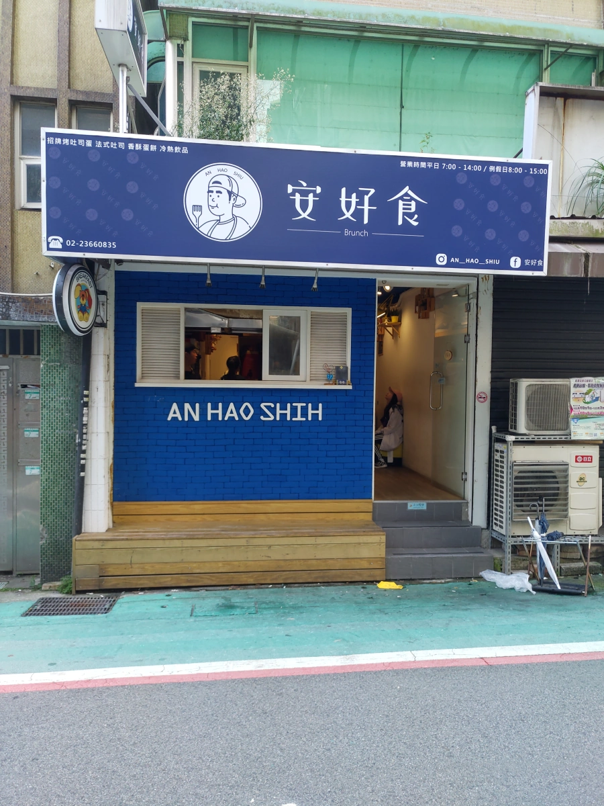
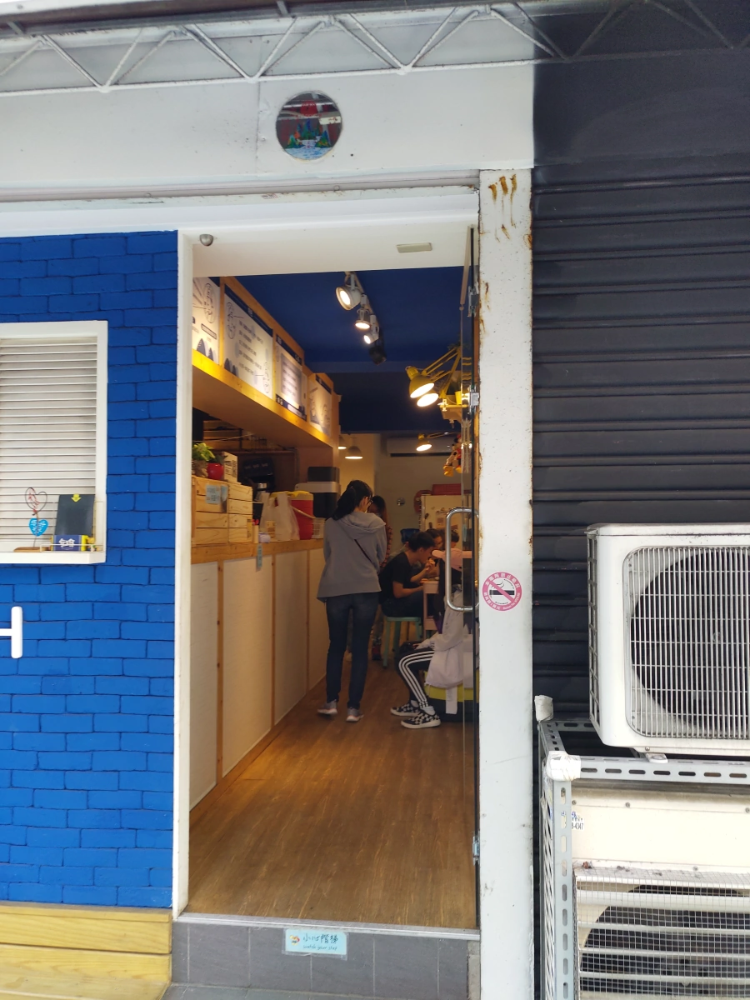
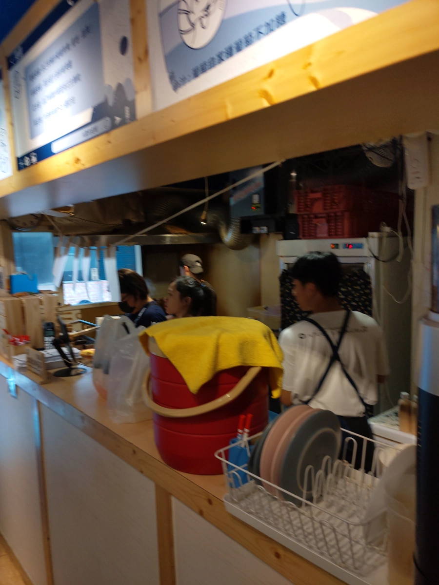
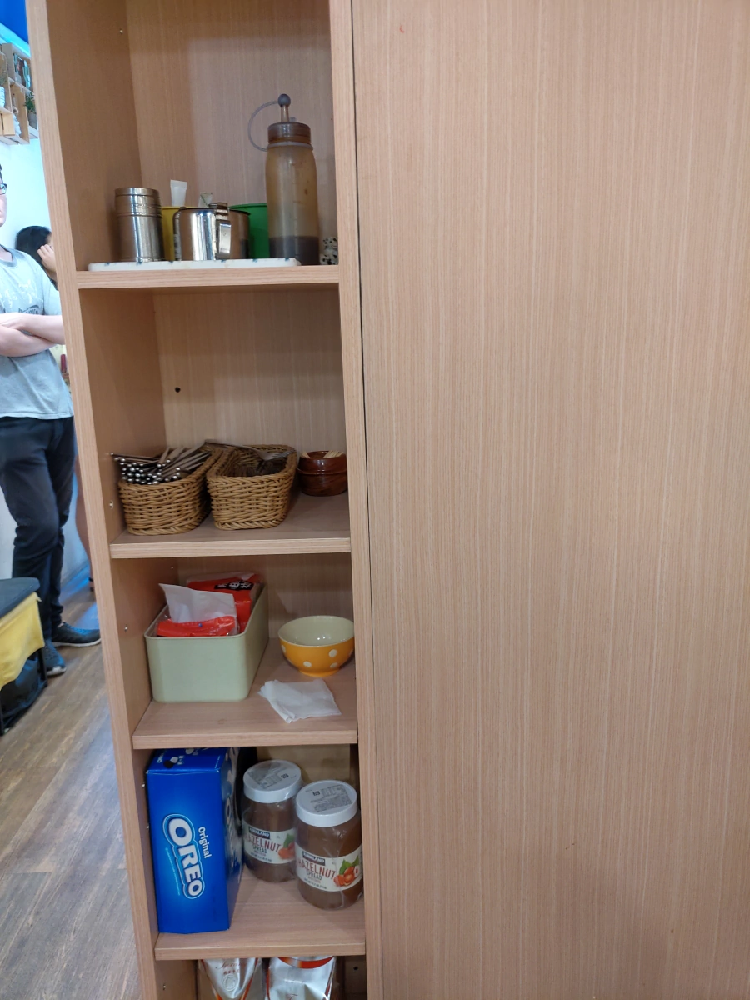
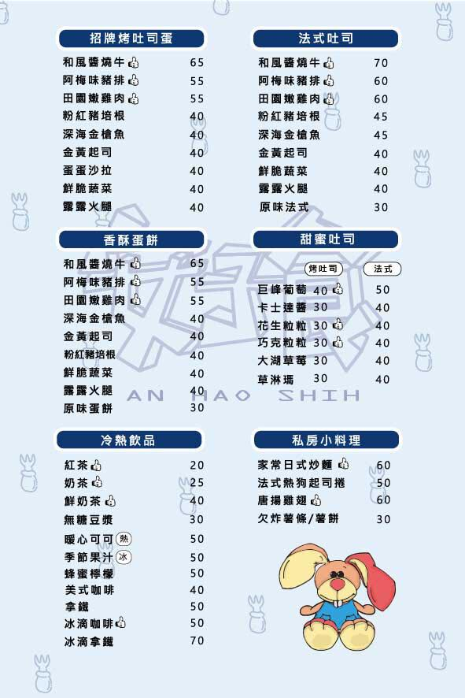
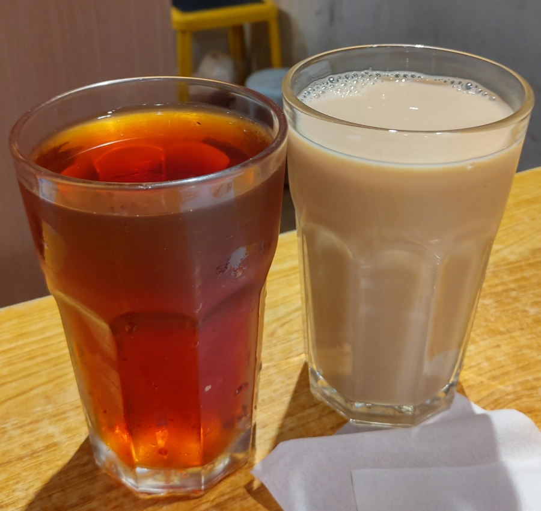
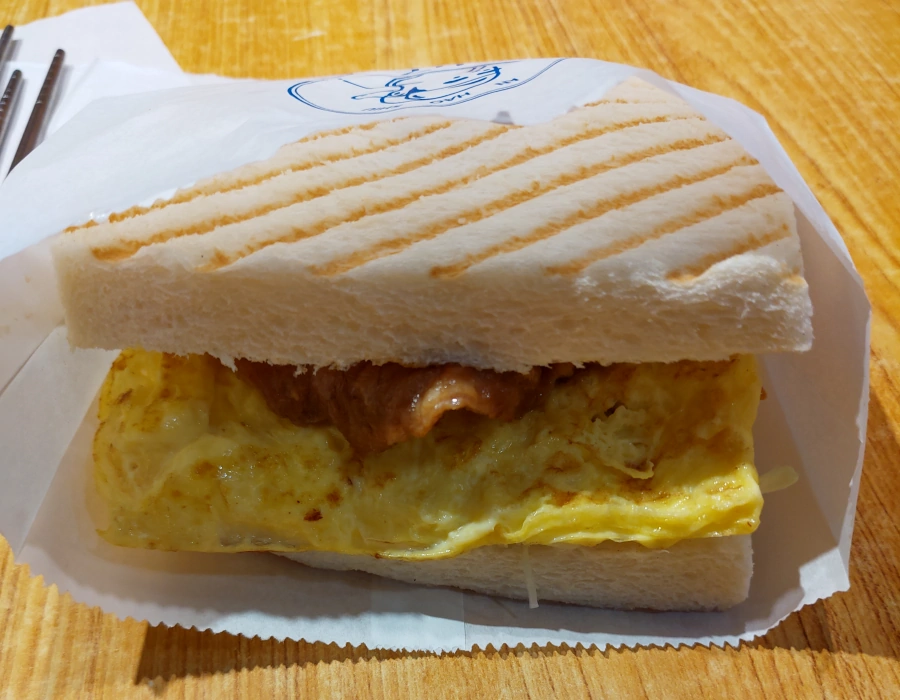
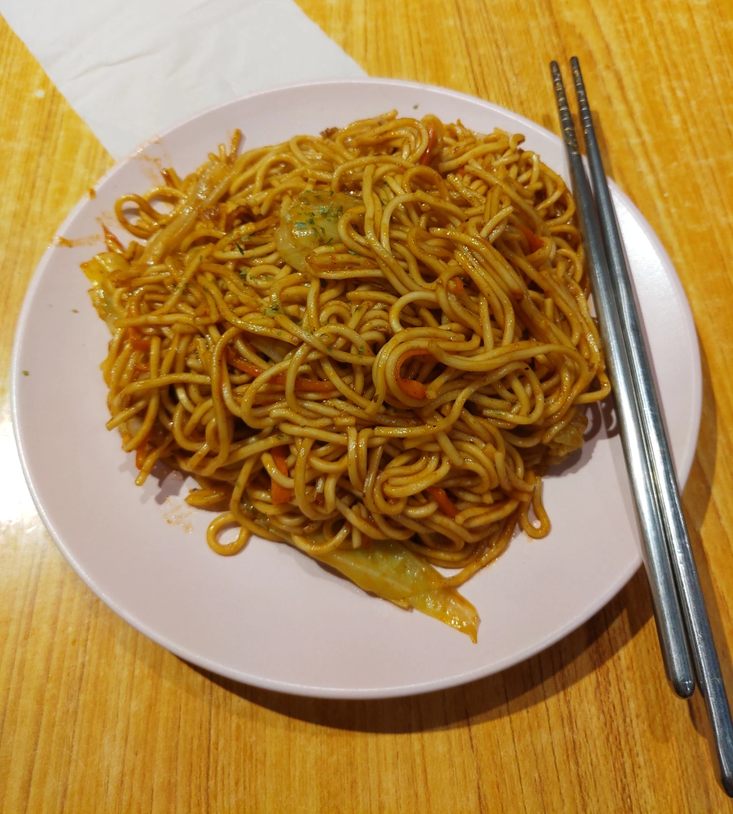

[台北] 安好食
| 餐廳名稱: | 安好食 |
|---|---|
| 地 址: | 台北市大安區新生南路三段86巷9號 |
| 營業時間: | 週一至週五 07:00-14:00 |
| 週六至週日 08:00-15:00 | |
| 電 話: | 02 2366 0835 |
女王在娘家附近找了 Google 高分的早餐店 - 安好食，其實就是客家話的 “很好吃” 之意。 這家店有點日式風格，8點半左右到達，裡面也坐滿，外面排7、8 位客人。 第一次來，不大懂它的制度，所幸一位熱心的外帶客人跟我們說外帶要排隊，內用到裡面等。 本來看裡面滿坐，想說外帶好了，一走進去，剛好有人離開，服務人員招呼我們去坐，巧妙地變成內用。 
門口進去的小椅子，就是候位區。 
門口進去左手邊是櫃台，櫃台後面就是廚房。 
自助式的餐具櫃。 
兵荒馬亂地，菜單迅速點好，交到櫃台。只好在官網找一張，似乎是一樣的內容。 
紅茶與鮮奶茶。紅茶這麼大杯才20 ，比一般美而美划算了，只是味道稍微稀，稍微有澀味。大概是茶葉煮太久，多加糖或決明子應該也能掩蓋，不過這樣就會不只20元了。 鮮奶茶 差不多，就是紅茶加牛奶。 
阿梅味豬排 招牌烤土司蛋， “阿梅味” 仍然是客家話，是 “媽媽的味道” 的意思。
這道菜很多人推薦。吃起來，烤土司跟蛋都不錯，蛋有點鬆軟的感覺。 豬排的味道，似乎是用 日式甜醬油 醃過，厚度很好，肉的中心一樣有入味，口味不錯。但有個小缺點，沒斷筋，不好咬。 這不是買個斷筋器，對豬排戳戳戳，就可以解決了嗎? 
日式炒麵，一樣是很多人推薦。 有肉片、高麗菜，一樣是日式甜醬油炒的，份量大。這道菜比阿梅味豬排 更甜了，更吃不習慣。 
阿梅味豬排烤土司蛋 與 日式炒麵 ，都是鎮店之寶，只是我是北部貓，不喜歡那麼甜，台南人應該就愛了。 開在台大附近，這個價位蠻合理的，難怪超多人過來內用外帶。 推薦給口味喜歡甜一點的人。